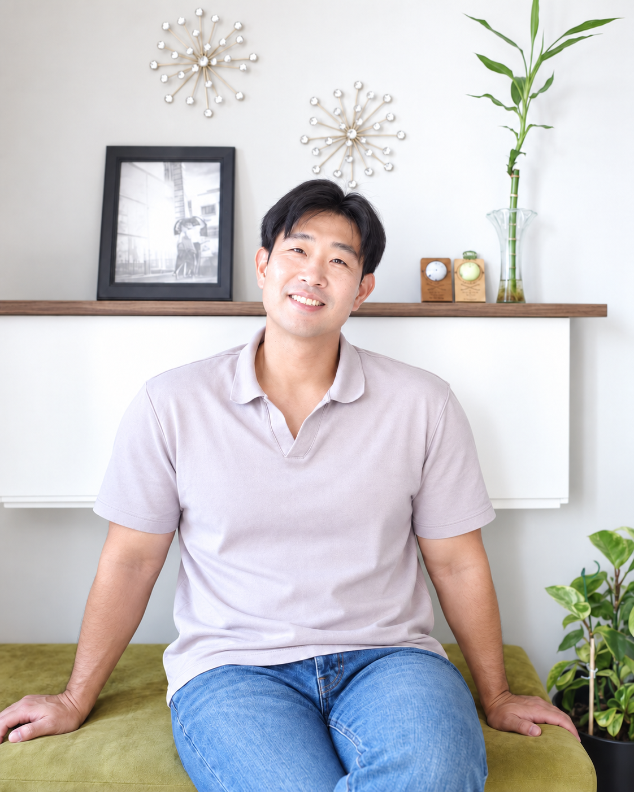

My background combines mechanical engineering, robotics research, sensing, data analysis, and system-level engineering.
I am a mechanical engineer with graduate research experience in robotics, autonomous systems, manufacturing dynamics, sensing, vibration analysis, and experimental engineering. My academic background includes mechanical engineering studies at Pusan National University, graduate research at the University of Victoria, and doctoral-level coursework and robotics research at the University of Waterloo.
My work has ranged from mobile robot navigation, LiDAR-camera perception, path planning, and control to operational modal analysis, chatter prediction, machining experiments, and engineering data analysis. Across these areas, I have consistently worked at the intersection of physical systems, sensing, computation, and quantitative validation.
I currently focus on robotics and autonomous systems, with particular emphasis on ROS 2, perception, sensor fusion, localization, SLAM, planning, control, and integrated robotic systems.
I also integrate AI tools into my engineering workflow for research, implementation, analysis, and documentation. I treat AI-generated output as a starting point rather than a final answer: assumptions, technical claims, benchmark results, data consistency, and source material are independently checked before they are accepted or used in engineering decisions.
My approach is to define the problem and its assumptions clearly, identify the variables that matter, integrate the required systems, measure performance, and validate the results against observable evidence. I place equal importance on technical implementation, reproducibility, critical verification, and clear documentation.
